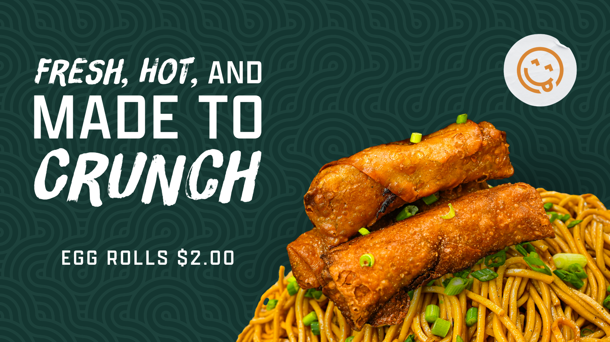
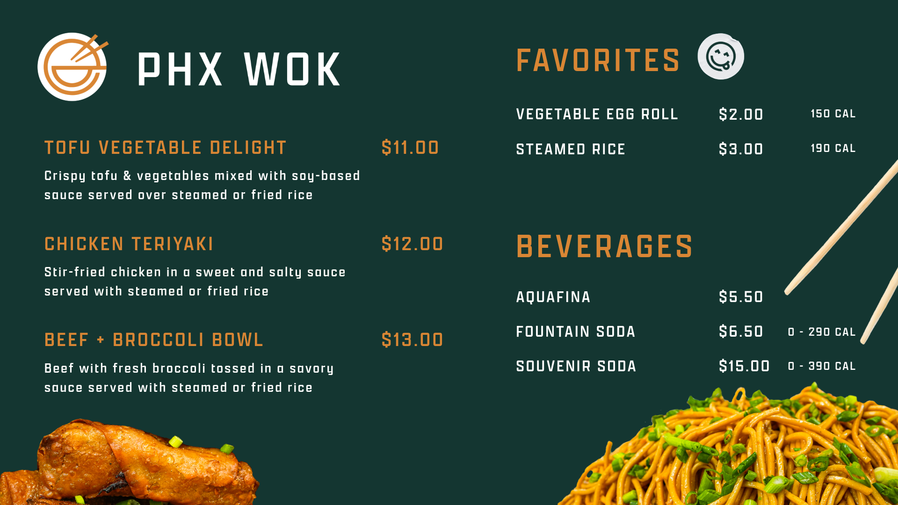
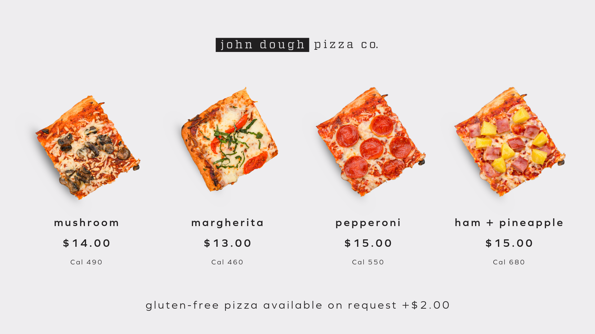
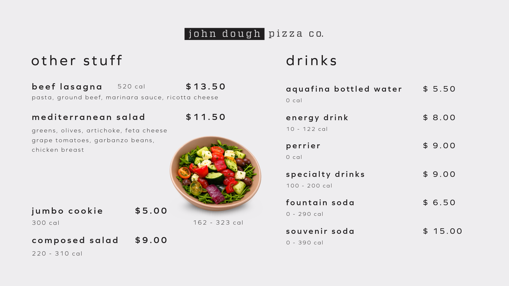

Review the request
Identify the content needed, where it will appear, and the relevant screen format and event requirements.
(Selected Work / Digital Signage & Content Operations)
I design, schedule, publish, and maintain digital signage across 55+ displays. My role combines creative production with daily content operations at Phoenix Convention Center, Symphony Hall, and Orpheum Theatre.
Selected work
Digital signage across Phoenix Convention Center, Orpheum Theatre, and Symphony Hall. The examples below feature food concepts at Phoenix Convention Center, with content scheduled and maintained through OptiSigns. Select an image to enlarge it.
01 / PHX Wok
Bold food photography draws attention. A companion menu organizes items, descriptions, and prices within the same visual identity.


02 / John Dough Pizza Co.
Coordinated boards carry the same typography and layout approach from pizza selections to sides and beverages.


The challenge
The previous signage platform made property-wide updates difficult. Changing menus, event requirements, and screen formats added complexity to keeping guest-facing information current.
My contribution
I helped transition the network to OptiSigns and adapted content for different screen orientations and locations.
I continue to manage the process from the initial creative request through scheduling, deployment, and final display verification.
How I manage the work
Identify the content needed, where it will appear, and the relevant screen format and event requirements.
Photograph food, edit imagery, and design menu boards and promotional graphics with clear information and consistent branding.
Manage screen scheduling and publish content through OptiSigns for the appropriate locations.
Check the final displays and update content as menus, promotions, and operational needs change.
The outcome
The new workflow allows menus, promotions, and guest communications to be updated more efficiently across the venues.
By managing both creative production and deployment, I connect the original request with what guests ultimately see on screen.